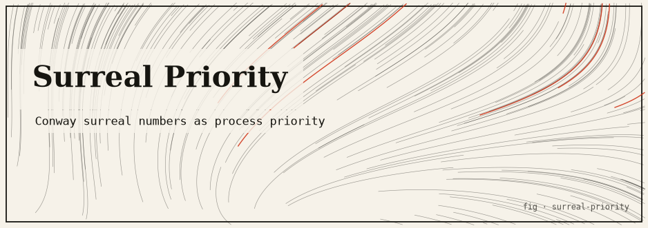

surreal-priority
Conway’s surreal numbers as process priorities — 1/ω, every dyadic fraction, and ω on one ordered line, driving a deterministic scheduler. Pure Rust, zero dependencies.

The idea
Integer process priorities are awkward: you cannot represent a task that should always preempt every other task without reserving a magic constant, and there is no natural “idle only” priority below 0. Conway’s surreal numbers solve this by providing a totally-ordered field that contains every finite priority, ω (infinite, beats all finite tasks), and 1/ω (infinitesimal, runs only when nothing else can — yet still strictly positive).
This package represents priorities as p = a·ω + b + c·(1/ω)
where a, b, c are dyadic rationals (n / 2𝑖). All comparisons use exact integer
arithmetic — no floating point. A deterministic scheduler picks the highest-priority
runnable task each tick and demonstrates that an ω-priority task starves all finite tasks,
while a 1/ω-priority task waits for complete idleness.
The mathematics
Priority p = a·ω + b + c·(1/ω)
where a, b, c are dyadic rationals n / 2^k (exact integer arithmetic)
Ordering (lexicographic):
p < q iff (a < q.a) or (a == q.a and b < q.b) or
(a == q.a and b == q.b and c < q.c)
Key values:
ω-priority (a=1, b=0, c=0) starves all finite priorities
1/ω priority (a=0, b=0, c=1) loses to every positive finite priority
Standard priorities: a=0, b=integer, c=0
16 passing tests: dyadic arithmetic, surreal ordering, scheduler behaviour
All comparisons: exact integer arithmetic — no float in any path
How it works
#![forbid(unsafe_code)]— fully safe Rust.- Zero external dependencies: dyadic rational arithmetic is implemented from scratch using only integer multiplication and comparison.
- The scheduler is a simple priority queue over
Taskstructs. Each tick it picks the highest-priority runnable task and runs it for one tick. cargo runprints an ordering table (1/ω < 1 < ω < 2ω) and a sample scheduler run showing starvation and idle-only behaviour.
Run it
git clone https://github.com/caelum0x/awesome-mad-projects.git cd surreal-priority cargo test # 16 tests: dyadic arithmetic, ordering, scheduler cargo run # ordering table + sample scheduler run
Priority ordering: 1/ω < 1 < 3/2 < 2 < ω < 2ω Scheduler run (10 ticks): Tick 1: ω-task A (runs) Tick 2: ω-task A (runs — starving finite tasks) ... Tick 8: finite-task B (runs — A complete) Tick 9: 1/ω-task C (runs — all others done)